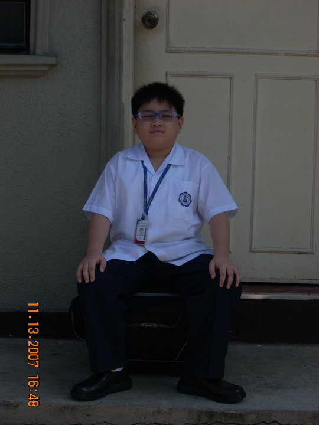

Childhood
Bang!, bang!, bang!
, countless gunshots can be heard all across the room.1 Amidst all the chaos that was going on, a new life was born on this world.2 On a cold evening in December 5, 2001 in the city of Beirut, Lebanon, Maria Lourdes Yu Guirao safely gave birth to her son and named him John Darrell Guirao.3 Lourdes is an OFW who was currently working as a maid in the Japanese embassy in Lebanon.4 As she was working on an unsafe environment she had no choice but to sent her son back on the Philippines where he would be raised by her cousin, Marc Bitoon and his family.5 It was a hard decision for the mother to be separated from her son but only gritted her teeth and made this hard choice as her rational mind took over her motherly heart.6 At only 2 months after being born, the baby, John Darrell Guirao was given to the Bitoon family to be taken care of.7
Even without his biological father, Darrell grew and received unconditional love from his guardians.8 It is to say that the love and care was great enough for him to not search for his biological father and seek his fatherly love.9 At the age of 4, manners, responsibilities, and other moral values were being taught to him.10 He was expected to be mature, understanding, and always be obedient especially towards the elderly.11 There really is not much to tell about his childhood as he mostly spent it inside of his home.12 Not only when he was around 9 years old when he was finally be able to explore the outside world.13 He could still vividly remember how beautiful the world is when he took a good stare at it.14 He wished that time would just come to a stop and be fascinated with what the wonder the world can offer.15 As he grow older, he had a childhood friend.16 This friend not only taught him the value of friendship, but it also made him appreciate how oddly satisfying a breeze of a gentle wind feels.17 Although being separated from his parents, the child did not wish for too much nor he dreamt as much as his peers.18 He just simply enjoyed what he had everything at that time.19 The child treasured every precious moments and kept it into his heart.20
Teenage

What a time to be alive!
, he said after singing his alma mater's hymn for the last time.1 While growing up, moral values were still being instilled to the child.2 His guardians, gave everything to their best capabilities to raise the child to be mature have a positive outlook on life as much as possible.3 As the only child in the family, surrounded by grown adults, the child was able to adapt quickly to his environment.4 Trantrums were not his thing, he could almost immediately read the atmosphere depending on the situation, and to have the will to always lead among his peers could be observed from him at the age of 10.5 He was able to carry this attitude towards his teenage years.6 While in High School, excellence is always his goal,7 He has always strived for his best, as many people have expectations to him.8
He excelled academically, socially, and even in sports.9 Even with his achievements, he always felt being empty inside.10 Even if he has a lot of friends, he always carried the feeling of loneliness with him.11 He just wished that just like before, the world would come to a full stop.12 But this time, not to be fascinated, but just to have his own time on this world.13 To be separated with the constant flow of change of time of the world.14 He dreaded this lonely path until he met a group of guys that would change his world.15 This group, who is composed of unique and sophisticated individuals who has conflicted likes and dislikes among themselves, retained their friendship just like every other group of friends out there.16 At first, he was intrigued.17 Not only when he was at the 7th grade and decided to join on their conversation was when he realized he found the missing puzzle piece on his life.18 Darrell valued, and treasured them.19 The love and care that was nurtured among them grew from simply being friends into brotherhood.20
College
I want to give up, but I have to move forward
, he said as he sighed for another typical tiring day which is ahead of him.1 As the pandemic came unexpectedly through, Darrell was one of the batch of students who was not able to have the gratifying experience of coming up into the stage for graduation.2 Instead, they only held a virtual graduation to recognize their achievements for the last time in High School.3
However, it is as if fate was not on his side, as the university decided to limit the number of scholarship grantees, sadly he did not made the cut11. He had no choice but to work on full-time while studying to support himself in College12. He barely gets some sleep, averaging his sleep from three to five hours every weekdays.13 Everyday felt like it was a torture for him, he is constantly drained, and tiref.14 But even then, this is not enough to drag him down.15 To achieve his dream, he is always willing to stake everything he has, even sacrificing his health just to get his dream.16 The simple dream of resting on his vacation house on a sandy beach on his retiring days.17 That's right, maybe it was his only dream after all.18 To be constantly at peace.19 To enjoy what every wonders and peace the world can bring to him for the longest time.20